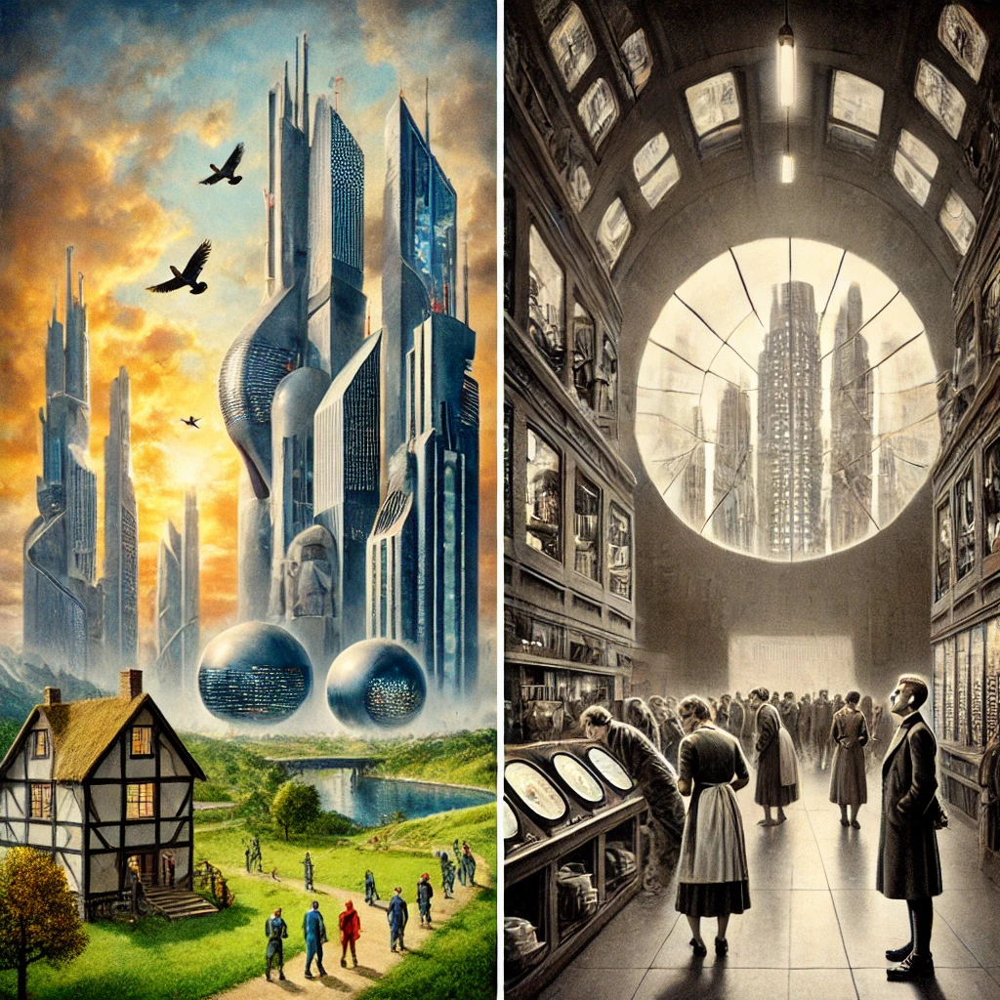

인위적으로 만들어진 '완벽한' 세상과, 자연스러운 외부 세상의 대비를 통해
"고통이 존재하지 않는 세상이 이상적일까?" 라는 고민을 하게 되었다.
또한, 만들어진 행복과, 자유의 가치가 공존할 수 있는지 궁금해졌다.

감상평에 대한 AI평가
✨작성하신 감상문은 *"멋진 신세계"*의 핵심 주제를 잘 포착하고 있습니다.
✨다만, 책 속 장면이나 설정을 구체적으로 언급하면 더 설득력 있는 글이 될 것입니다.
✨개인적인 경험이나 생각을 추가하면 감상이 더욱 인상적으로 다가올 수 있습니다.
✨짧지만 철학적인 질문을 던지는 점이 좋으며, 내용을 확장하면 더욱 깊이 있는 글이 될 것입니다.